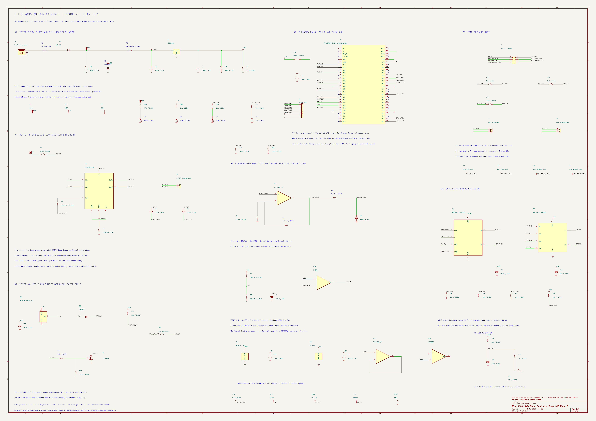

Individual datasheet / Schematics
RAS304 · TEAM 103 · NODE 2 · REVISION 1.0 · 21 OCTOBER 2026Muhammad Ayaan Ahmad
Design status: Schematic captured and checked. Bench testing, motor selection and team UART integration remain open; no measured performance is claimed.
Click the image for full resolution, or open the vector PDF to inspect all component values and pins.

This schematic implements Node 2, the pitch-axis actuation board assigned to Ayaan Ahmad in Team 103's published Product Requirements. It contains the required Curiosity Nano module, local regulated power, a bare MOSFET H-bridge IC, low-side current sensing, an op-amp, filtering, overload detection, and debug interfaces.
The earlier individual component-selection page described a provisional optical sensor. This schematic follows the explicit team allocation instead. The team block-diagram page is still a template. UART routing is therefore provided on separate upstream/downstream headers while the published IDC assignments are preserved.
This is a schematic-stage design. No breadboard tests, thermal tests, mechanical performance, or measured fault-response times are claimed. The provisional motor envelope must be checked against the actual motor and gearbox before PCB release.
J1 accepts a regulated 9-12 V, center-positive barrel supply. Select a source rated at least 2 A. F1 is a removable 1 A fast 5x20 mm fuse; D1 is a 1N5822 reverse-polarity blocking diode. C1 (470 uF/35 V) and D2 (SMBJ15A) support transient suppression. Actual motor regeneration energy and fuse inrush coordination require bench verification.
F2 independently protects the logic branch with a removable 250 mA fast fuse. U1 is the tighter-tolerance L7805ACV through-hole regulator, with 330 nF input bypass, 100 nF output bypass, 10 uF bulk output capacitance and a 1 kohm minimum-load resistor. All listed capacitor voltages exceed operating voltage by at least 25%.
A 150 mA maximum logic-rail design allocation gives a conservative regulator loss of (12-4.8) x 0.150 + 12 x 0.010 = 1.20 W, ignoring the helpful D1 drop. A heatsink <=25 C/W, with about 5 C/W junction-to-case and 2 C/W interface, estimates <=38.4 C rise. This is a design allocation and screening calculation, not a validated maximum-current budget or enclosure test.
The Nano receives local 5 V at VTG through JP1. VOFF is tied to common to disable its on-board target regulator; VBUS is explicitly unconnected. C5 bypasses VTG. The module already contains the MCU supply bypass network. USB remains available for programming and debugging.
U3 is a DRV8871DDAR mounted directly on the PCB. It integrates the MOSFET H-bridge and inductive recirculation paths. JP5 isolates the motor branch. J6 carries the two motor terminals; neither terminal is tied to ground. The initial motor envelope is a 9-12 V brushed DC gearmotor at <=0.35 A continuous. Torque, ratio, speed, startup current, travel sensing and actual motor part number remain to be established.
R2 = 100 kohm sets nominal internal current chopping at 64/100 = 0.64 A. Applying the datasheet 59-69 kV coefficient range and 1% resistor tolerance gives approximately 0.584-0.697 A at the published test conditions. This is not a guaranteed characterization at every load and temperature.
R3 = 0.10 ohm/2 W sits below the entire driver return island. U3 GND, PGND, exposed pad, ILIM return, and local bypass returns all meet above this resistor. Kelvin sense wiring feeds U4A. Do not bypass the shunt with a ground plane or test lead. The measured signal is net supply-return current; it excludes winding current circulating wholly inside the bridge.
U4A (MCP6002) has non-inverting gain 1 + 20k/1k = 21, giving 2.1 V/A for forward supply current. R6 = 1 kohm and C8 = 100 nF form a low-pass stage with fc = 1/(2 pi RC) = 1.59 kHz and time constant 100 us. RA0 reads the filtered signal. ADC timing must account for PWM, amplifier settling, source impedance and the required acquisition time.
R7/R8 produce VTRIP = 5 x 10/(39+10) = 1.020 V. U5A pulls FAULT_N low when filtered current exceeds this reference, corresponding to about 0.486 A at steady DC. Supply tolerance, resistor tolerance, amplifier/comparator offset and PWM duty affect the actual trip point. At 0.697 A, R3 dissipates about 0.049 W, well below its 2 W rating.
U6, an SN74LVC1G74, latches the motor permit. FAULT_N asynchronously clears it; U7 gates both direction/PWM outputs to zero when the permit is cleared. The driver therefore coasts after a fault and remains disabled even after current falls. A fresh ARM_PULSE edge is required to restore permission. This is a functional interlock, not a certified safety controller.
U8 (MCP100-450) and D3 assert the common fault during power-up or brownout. Q1 lets the MCU assert the same open-collector fault. JP6 installs the local 10 kohm pull-up for standalone tests; use exactly one pull-up across the connected bus. JP4 separates the local fault from IDC pin 5 for debugging.
SW1 uses a 10 kohm pull-up, 2.2 uF capacitor and 1 kohm discharge resistor. The approximate RC times are 22 ms release and 2 ms press. Configure RD1 for Schmitt-trigger digital input and verify actual switch bounce. The button requests arming; firmware must first check faults and require a deliberate action.
D4 indicates the input rail, D5 indicates 5 V, D6 is an MCU heartbeat, and D7 shows not-armed status. Each has a current-limiting resistor. Twelve test points and an eight-pin expansion header expose key signals and spare GPIO. Unused op-amp and comparator inputs have defined states. All IC supply pins have local bypassing.
KiCad 10.0.6 electrical-rule check: 0 errors and 0 warnings, no exclusions. An independent check of the exported netlist verified 17 critical connection groups, VBUS/VTG isolation, and the shunt return separation. Custom module, driver, amplifier, comparator and logic symbols include MAA in their library names. All schematic footprints are packaged locally.
Before manufacturing: confirm the physical motor and gearbox; validate driver thermal copper/exposed-pad construction, startup and stall behavior, regenerative voltage, fuse curves, regulator heating and the overload threshold. Confirm the upstream/downstream UART connections and the single fault pull-up with the team. Obtain instructor feedback on filter choice.
Before integration: perform logic-only power-up with JP5 removed; measure 5 V and verify the latch starts cleared. Check the driver truth table without a motor. Inject current-sense voltage or use a controlled load to exercise the trip. Confirm a fault forces both inputs low and cannot automatically restart. Then test at a current-limited supply and measure the <20 ms team fault-response target. No such measurements have been performed yet.
| IDC pin | Team signal | This board |
|---|---|---|
| 1 | Pitch direction | RB0 input via JP2 |
| 2 | Pitch PWM / enable | RB1 input via JP3 |
| 3 | Roll direction | Test pad only |
| 4 | Roll PWM | Test pad only |
| 5 | Global FAULT_N | Open collector + RD2 + latch, via JP4 |
| 6 | Roll position analog | Test pad only |
| 7 | Joint load analog | Test pad only |
| 8 | Common ground | Circuit common |
J4: pin 1 upstream UART TX to this board RX; pin 2 common. J5: pin 1 this board TX to downstream RX; pin 2 common. These are 5 V logic interfaces, not RS-232. Configure PPS in firmware and confirm receiver voltage compatibility.
| PIC signal | Module pad | Role |
|---|---|---|
| RA0 | 43 | Filtered current ADC |
| RA1 | 44 | ARM_PULSE |
| RC2 / RC3 | 7 / 8 | PWM_FWD / PWM_REV |
| RC7 / RC6 | 19 / 13 | UART RX / TX |
| RD0 / RD1 | 20 / 21 | Heartbeat / debounced button |
| RD2 / RD3 | 22 / 23 | FAULT_N input / software fault output |
Checked against the published team repository and manufacturer documents. Team repository snapshot: 11f2f8a, retrieved 21 October 2026.